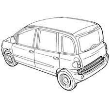
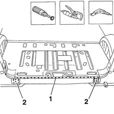
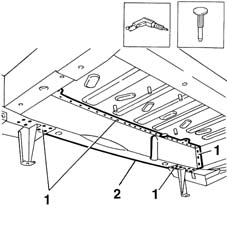
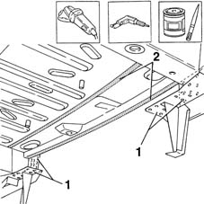
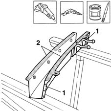
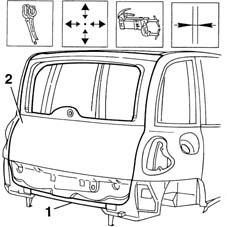
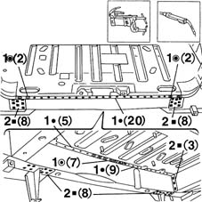
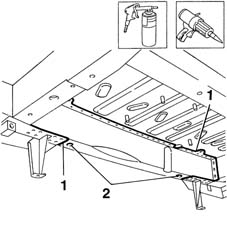

7210B70 R.R. REAR TRIM (structural element)
- Path
- Procedures > 72 PANELS AND FRAME > 7210 REMOVING REFITTING > 7210B structure elements-central and rear part > 7210B70 R.R. REAR TRIM (structural element)
- Kind
- repair procedure (removal / refitting; the operation number is the code)
- Applies to
- all engines; all production periods
- Interactive page
- https://sloeber94.github.io/elrnDB-fMltpl/en/#/2892317
Applies to: all engines; all production periods
 Removing
Removing
 Refitting
RefittingRemove all fouling parts.
Check if any of the connected parts are deformed by checking body alignment dimensions. Use appropriate measurement tools (reference rigs, templates or gauges).
Straighten the body if necessary.

Applies to: all engines; all production periods
Use a rotary brush to remove paint to gain access to the spot welds.
1. Use a chamfering machine to remove the spot welds shown in the figure.
2. Drill out the weld spots shown in the figure.

Applies to: all engines; all production periods
1. From underneath the car, drill the spot welds shown.
Use a chisel and hammer to remove the spot welds.
2. Remove the crossmember.

Applies to: all engines; all production periods
Refitting
RemovingUse a grinding wheel to remove the weld residues.
1. Drill a few holes.
2. Apply electroweldable paint to the parts of the bodywork in contact with the crossmember.

Applies to: all engines; all production periods
Use a grinding wheel to remove the corrosion-proofing from the part.
1. Make three equidistant holes on the edges of the part.
2. Apply electroweldable paint finish to the edges in contact with the car.

Applies to: all engines; all production periods
1. Position the part properly on the car and secure using self-locking clips.
Tack the part by carrying out some spot welds.
Remove the self-locking grippers.
2. Close the tailgate.
Check alignment and ensure the gap around the edge is even.

Applies to: all engines; all production periods
1. Use a spot welder to weld the areas shown.
2. Use a MIG welder to fill the holes made previously.
Correct any deformations in the panel using a profiled stake and mallet.
Use a grinding wheel to clean and and level the newly-welded areas.

Applies to: all engines; all production periods
Apply rust-proofing to the newly-welded areas.
1. Use sealant to seal the areas between car and part.
Apply paint.
2. Apply wax oil.

Applies to: all engines; all production periods
Refit all fouling parts.